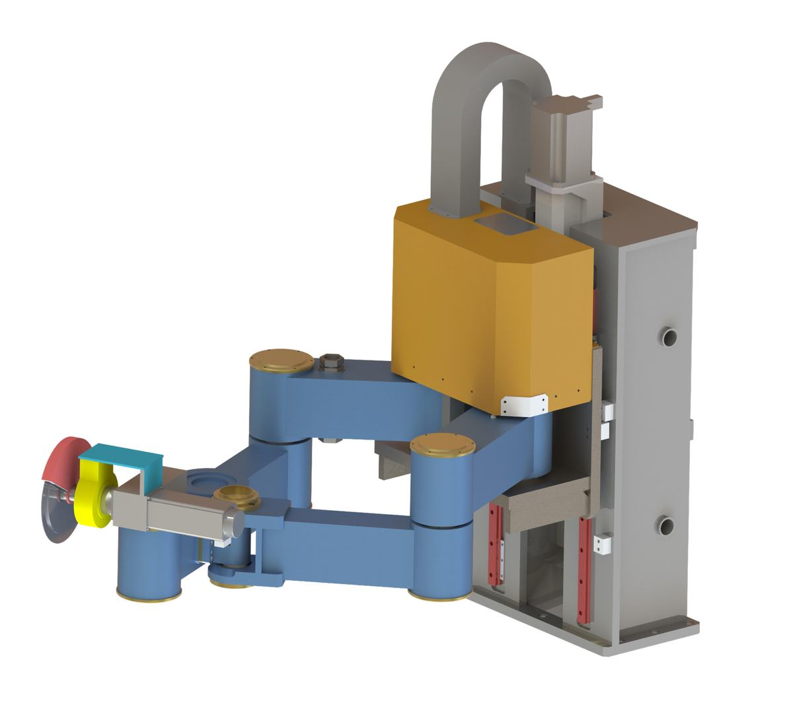
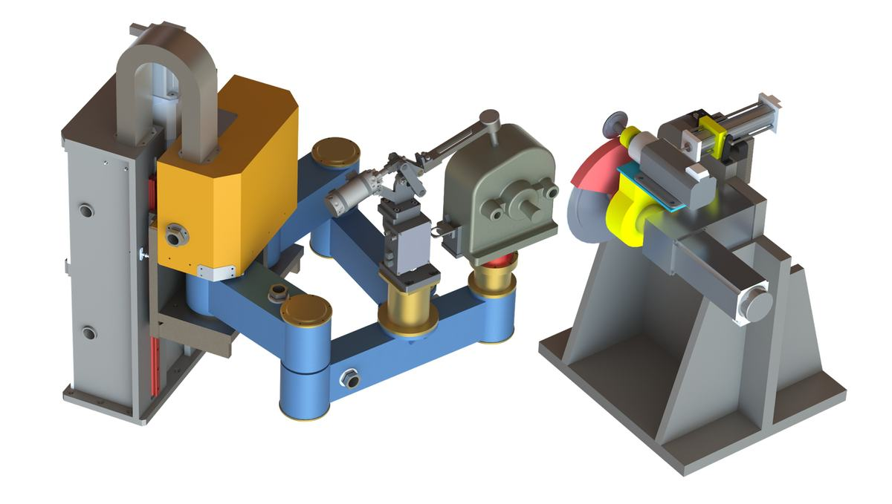
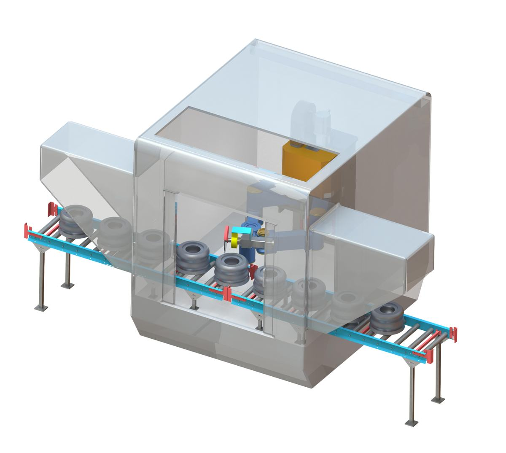

加工机器人灵活性高、重构能力强、刚度质量比大，是复杂、多样、大型零部件高效智能制造的必然选择，已成为破解传统制造装备技术瓶颈的关键突破口，对实现中国制造2025目标和促进我国高端制造装备的增速发展具有重大意义。
项目在国家863计划、科技支撑计划等支持下，围绕复杂多样铸造件磨切一体加工技术，从基础理论、装备创成和工程应用三个层面，突破了机构发明、性能设计、控制工艺与系统集成等系列关键技术，研制成功具有完全自主知识产权的高刚度磨切一体加工机器人产品，解决了长期制约铸造产业高质量发展的难题。
主要技术创新点为：
项目授权中国发明专利24件、实用新型专利22件、软件著作权3件；发表国际高水平论文24篇，他引206次。2020年，获得由天津市人民政府授予的“技术发明奖”一等奖。2019、2020连续两年在中国国际铸造博览会上获得由中国铸造协会颁发的“全国铸造装备创新奖”。2020年，经由中国工程院院士邓宗全教授为组长的专家组鉴定，项目成果达到了“国际领先”水平。项目研制出具有完全自主知识产权的3个系列10种规格机器人产品，已广泛用于汽车、船舶、轨道交通、工程机械等基础零部件制造领域，解决了中国一汽、广东富华等十余家公司“小件干不快，中件干不好，大件干不了”的铸造件磨切一体加工难题。近四年，实现经济效益20余亿元，创收外汇1700余万美元；项目突破了制约行业产能、安全生产和环境治理等方面的技术瓶颈，推动了铸造产业转型升级；经济与社会效益显著。项目成果对促进我国高端制造装备的自主创新具有重大意义。
高端装备是国之重器，关键零部件是其基础和核心，但关键零部件产业发展滞后，已成为制约高端装备制造业发展的瓶颈问题。具有复杂外形和内腔结构的高端装备关键零部件超过40%以铸造件为主，厘米级浇冒口和飞边毛刺等残留特征的磨切去除是这些零部件制造的首要加工工序。超过95%铸造企业采用的人工磨切作业方式劳动强度大、工作效率低、产品一致性差、安全隐患高，采用自动化磨切装备取代人工磨切作业方式已成为必然趋势。
现有自动化磨切装备以日本Koyama串联机器人和意大利Maus串联机床为代表，前者灵活性高但刚度和精度差，后者刚度和精度高但灵活性不足，难以满足复杂、多样、大型零部件高效率高质量磨切一体加工的迫切需求。因此，亟需突破传统装备的串联结构形式，充分利用串联机器人和机床的各自优势，研发兼具灵活性和高刚度的新一代磨切一体加工机器人装备。
项目在国家863计划、科技支撑计划、天津市专项等支持下，产学研联合攻关，突破了新一代磨切一体加工机器人拓扑构型综合、性能匹配设计、控制工艺规划等核心关键技术，研发出3个系列10种规格的机器人产品，解决了“小件干不快，中件干不好，大件干不了”的行业共性难题，对促进我国高端制造装备的自主创新具有重大意义。
针对现有磨切装备因无法兼顾刚度和灵活性优势而难以解决多类型、多材质和多尺度铸造件高效高质量磨切加工的难题，项目从基础理论、装备创成和工程应用三个层面，突破新一代磨切一体加工机器人拓扑构型综合、性能匹配设计、控制工艺规划等核心关键技术，集成具有完全自主知识产权的高刚度磨切一体加工机器人系列化产品，并开展产业化应用。
创新点1：发明了机器人拓扑结构的解析化运算与代数化综合新技术，综合出数十种结构紧凑、刚度高且重构能力强的新型并混联机构，提出了高刚度磨切一体加工机器人方案，解决了传统机床灵活性不足与串联机器人刚度不高的难题。
（1）提出了连续运动解析表征与代数运算的几何代数方法，建立了连续运动与拓扑构型的一一映射模型。
几何代数具备图形化直观描述与代数化解析运算的双重优势。借助几何代数的图形化描述，任意刚体的连续运动可表述为绕连续运动轴的转动与沿该轴的移动。基于此，严格证明了几何代数的交换定律与结合定律，形成了一套数学严谨的连续运动解析表征与代数运算方法。构建连续运动基本表达式与单自由度运动副的映射模型，揭示连续运动合成与串联支链的代数关联，提出连续运动交集表示并联机构拓扑模型的思路，解决了连续运动与机构拓扑关联缺失导致拓扑构型无法代数化综合的难题。
（2）提出了运动副、支链与机构拓扑构型的正向解析建模与逆向代数综合方法，发明出磨切一体加工机器人机构的拓扑构型综合新技术。
利用几何代数连续运动与拓扑构型的映射模型，提出了由运动副、串联支链到并联机构的拓扑构型正向建模方法。从并联机构的几何代数连续运动表述入手，直接生成串联支链的标准型连续运动拓扑模型，通过运动交换与合成运算获取衍生串联支链，由连续运动交集运算定义标准及衍生支链的装配条件及驱动关节优配准则，提出了概念新颖、数学严格的机构逆向代数化构型综合方法。依据磨切加工作业的特点归纳出磨切一体加工机器人机构的期望运动，基于所提出的机构逆向代数化构型综合方法，发明出数十种具有完全自主知识产权的磨切一体加工机器人新机构。
（3）提出了拓扑构型评价指标并优选出结构紧凑、刚度高且重构能力强的磨切一体加工机器人新机构，解决了机床灵活性不足与串联机器人刚度不高的难题。
结合串联机构灵活运动与并联机构高刚度的优势，提出集成串联与并联机构的磨切一体加工混联加工机器人机构方案。面向灵活性、高刚性、制造成本、可重构性、结构紧凑性、控制便捷性等磨切一体加工机构的性能与制造等需求，依据不同权重定义拓扑构型评价指标，优选出双臂式平面并联机构作为磨切一体加工机器人主机构。集成主机构与多自由度串联机构，形成了结构紧凑、刚度高且重构能力强的磨切一体加工机器人系统方案。
创新点2：发明了磨切一体加工机器人的一体化建模与综合性能匹配设计新技术，提出了多目标合作均衡的参数优选新方法，实现了混联机器人谱系化性能设计，解决了机器人质量、刚度和动态特性间的最优匹配设计难题。
（1）提出了由位移模型直接微分获得速度雅可比矩阵与加速度海塞矩阵的方法，形成了横跨机器人运动学、静刚度与动力学的综合性能建模技术。
利用机器人机构位移模型与速度模型的微分映射关系，通过位移模型的一阶微分直接获得表示关节空间与末端操作空间映射的速度雅可比矩阵，建立了磨切一体机器人机构的运动学模型。视机构受力产生的变形为微小位移量，借助雅可比矩阵揭示机构变形及静载荷的传递关系，开展了磨切一体机器人机构的静刚度建模。通过位移模型的二阶微分获得加速度海塞矩阵，揭示出机构速度、加速度、惯性力和动载荷间的映射关系，构建了多模块弹性动力学模型。以速度雅可比矩阵和加速度海塞矩阵为性能映射矩阵，形成了横跨磨切一体加工机器人运动学、静刚度和动力学的综合性能建模技术。
（2）建立了计及机器人物理样机制造和装配误差的参数扰动模型，提出了轻质量、高刚度和优动态特性等多性能匹配的参数优选方法。
以磨切一体加工对机器人机构的性能需求为驱动，定义运动学、静刚度与动力学性能评价指标作为优化设计目标。基于前述建立的综合性能模型，计及机器人机构加工装配误差对机构尺度、截面及惯性参数的影响，构建参数扰动模型。集成参数扰动模型、性能优化目标及约束条件，构建了多目标优化模型。针对不同性能指标关于同一设计变量彼此冲突的问题，提出了基于Pareto Frontier解集的性能合作均衡点准则，形成了多优化目标和多约束条件下的参数优选方法，解决了磨切一体加工机器人质量、刚度和动态特性间的最优匹配设计难题。
（3）提出了高刚度磨切一体加工机器人的谱系化优化设计方法，满足了多类型、多材质、多尺度的铸造件高效高质量磨切一体加工需求。
针对不同规格及不同材质铸造件的高效高刚度磨切一体加工需求，提出了封闭式、通过式与敞开式机器人机构方案。依据铸造件加工范围与加工精度要求，分别构建3个系列磨切一体加工机器人的优化设计模型，基于前述性能匹配设计方法进行谱系化设计，优选出对应磨切一体加工机器人机构的尺度及截面参数。进一步根据优选参数进行机械结构详细设计，开发出封闭式、通过式与敞开式磨切一体加工机器人物理样机。
创新点3：发明了磨切一体加工机器人多模式控制与智能工艺规划新技术，提出了精准示教和主从人机交互控制新方法，开发出机器人智能控制与工艺规划系统软件，解决了跨尺度多材质异形复杂铸造件高效磨切一体加工的难题。
（1）依据铸造件的规格与材质特征，提出了工件式、流水通过式和工具式磨切一体加工工艺方案，实现小、中、大型铸造件的高效磨切一体加工。
对于小型铸造件，磨切刀具的空间位置保持不变、仅产生绕轴线的刀具回转运动，磨切一体加工机器人本体夹持铸造件，利用机器人本体的五轴运动向磨切刀具逼近，形成工件式磨切一体加工方案。对于中小型回转类铸造件，机器人本体末端设置磨切刀具，铸造件以流水线形式运动至机器人刀具处进行磨切加工，随后直接通过流水线进入下一工序。对于中大型铸造件，机器人末端设置磨切刀具，铸造件固定至夹具后保持不动，一个或者多个磨切一体加工机器人逼近铸造件进行磨切加工。针对不同规格铸造件，制定不同磨切一体加工工艺流程，实现了不同规格铸造件的高效磨切一体加工。
（2）基于磨切一体加工工艺方案，依据铸造件的批量与复杂程度，提出了磨切一体加工机器人集示教编程、离线编程与人机交互于一体的多模式控制技术。
针对大批量铸造件的磨切加工路径编程要求，依据铸造件实际磨切特征规划磨切轨迹，提出了基于手轮式示教器的精准示教编程方法，实现自动化精准磨切加工。面向中大型复杂形貌的铸造件，以铸造件CAD模型为基础，提取关键磨切特征，生成磨切加工路径并将其嵌入离线编程模块，形成了复杂铸造件的快速离线编程方法。由于示教或离线编程方式无法准确捕捉大型铸造件的复杂磨切特征，针对此问题，提出了基于人机交互式力控磨切加工控制策略和算法，实施人机协作力反馈主从操控磨切加工，满足了大型铸造件的现场高效磨切加工需求。集成示教编程、离线编程与人机交互控制方法于一体，实现了批量复杂铸造件的高效磨切控制。
（3）开发出激光检测、激光扫描、磨切主轴负载检测等智能工艺技术，解决了磨切一体加工过程中定位误差智能消除、轨迹在线调整及工艺参数自动调节的工艺规划难题。
针对铸造件定位不准确导致磨切加工误差大的问题，提出了激光快速检测铸造件安装点位误差的方法，基于安装误差调整夹具位姿，实现了中小型铸造件的精准定位。面向中大型铸造件的长合模线、不规则毛刺飞边等磨切形貌，提出了激光扫描技术实时调整磨切路径，完成了铸造件不同磨切特征的工艺快速调节。针对铸造件材质不均匀、硬度不一的实际磨切工况，提出了磨切主轴负载检测方法，通过力传感器获取由铸造件材质与硬度变化引起的主轴力矩波动信息，自动调整磨切深度、刀具进给速度等工艺参数。集成激光检测、激光扫描与磨切主轴负载检测等智能工艺技术于一体，解决了具有显著个体差异的铸造件高效高质量磨切工艺规划难题。



高刚度磨切一体加工机器人,复杂铸件智能加工
加工机器人的工程形态
铸造件打磨替代人工,改善劳动环境
铸造行业自动化改造市场大
机器人加工国产化样本